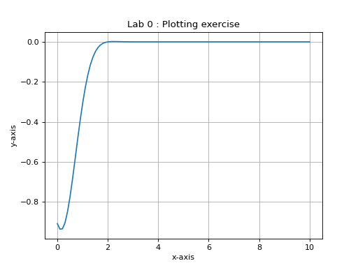

1. Lab 0 : Introduction to Python
Note
In order to run a Python script, you can use the \(run\) button that all IDEs normally provide. Alternatively, you can run the script from the terminal (command prompt on windows) by running the command:
$ python my_python_script.py
Note that your terminal must be in the same directory for the command to work. Also, remember to activate the virtual environment before running the program.
1.1. Basic Python Concepts
In this section we will quickly go over the list of topics given below. We suggest you to go through each section individually and spend time exploring each of the concepts by making changes to the code and observing the outputs.
HelloWorld
1#!/usr/bin/env python3
2# pylint: disable=invalid-name
3
4"""Hello world!
5
6This program runs the traditional Hello, World!
7
8"""
9
10print('Hello, World!')
11
Imports
Data Types
Math
Conditional Statements
Data Containers : Lists, Tuples and Dictionaries
Functions
Loops
Numpy
Matplotlib
Classes
While you are executing each of the small exercises, try to learn how to use different features of your IDE. Especially the help and debugging feature. When you are unsure of any command, use the help service either the one built into Python or embedded in your IDE. After familiarizing yourself with the above concepts try to solve the following python exercises.
1.2. Exercise 1
Check if the following matrix M is a magic square or not?
Hint :A magic square is a square matrix which contains distinct integers and whose sum along any of its individual rows or columns or diagonal is a constant. The constant is called as a magic constant or magic sum or magic square
Further Step :Try if you can generalize your script to have a function to check any arbitrary matrix if it is a magic square or not. Import the function as a module in another script and use it to check the matrix M
1.3. Exercise 2 - Plotting a function
Plot the following function \(f(x)\) over an interval [0, 2] with proper labels and title
(Source code, png, hires.png, pdf)
{kind=link}
{kind=link}
